Snakes of Mexico
441 snake species are recorded in Mexico in SnakeList: 92 venomous and 349 non-venomous, from 8 families.
- 441species
- 92venomous
- 349non-venomous
- 8families
Species
Showing 441 species
 Adorned Graceful Brown SnakeRhadinaea decorata
Adorned Graceful Brown SnakeRhadinaea decorata Arizona Black RattlesnakeCrotalus cerberus
Arizona Black RattlesnakeCrotalus cerberus Atlantic Central American MilksnakeLampropeltis polyzona
Atlantic Central American MilksnakeLampropeltis polyzona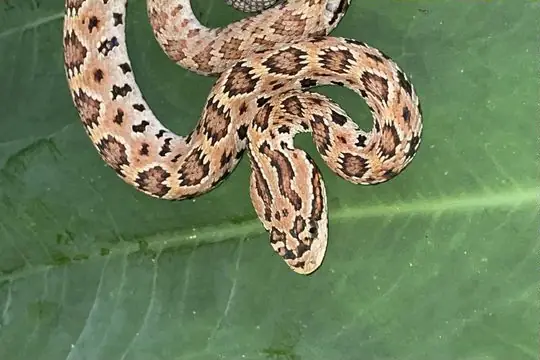
Autlán Long-tailed RattlesnakeCrotalus lannomi Baird's Patchnose SnakeSalvadora bairdi
Baird's Patchnose SnakeSalvadora bairdi Baja California CoachwhipMasticophis fuliginosus
Baja California CoachwhipMasticophis fuliginosus Baja California Lyre SnakeTrimorphodon lyrophanes
Baja California Lyre SnakeTrimorphodon lyrophanes Baja California Night SnakeHypsiglena slevini
Baja California Night SnakeHypsiglena slevini Baja California Rat SnakeBogertophis rosaliae
Baja California Rat SnakeBogertophis rosaliae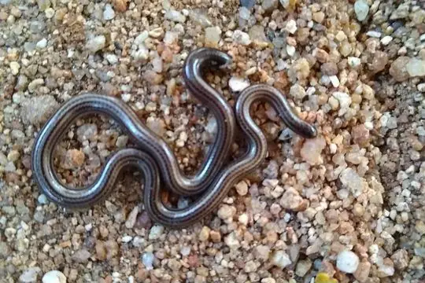
Bakewell's Blind SnakeEpictia bakewelli Balsas Coral SnakeMicrurus laticollaris
Balsas Coral SnakeMicrurus laticollaris Banded Cat-eyed Snake (annulata)Leptodeira annulata
Banded Cat-eyed Snake (annulata)Leptodeira annulata Banded Sand Snake (cincta)Sonora cincta
Banded Sand Snake (cincta)Sonora cincta Banded Sand Snake (fasciata)Sonora fasciata
Banded Sand Snake (fasciata)Sonora fasciata Banded Snail SuckerTropidodipsas fasciata
Banded Snail SuckerTropidodipsas fasciata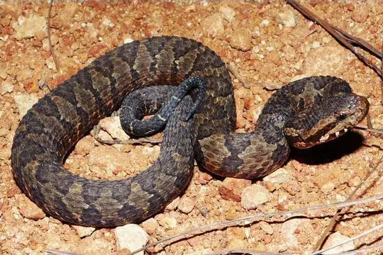
Barbour's Montane Pit ViperMixcoatlus barbouri Barred Forest RacerDendrophidion vinitor
Barred Forest RacerDendrophidion vinitor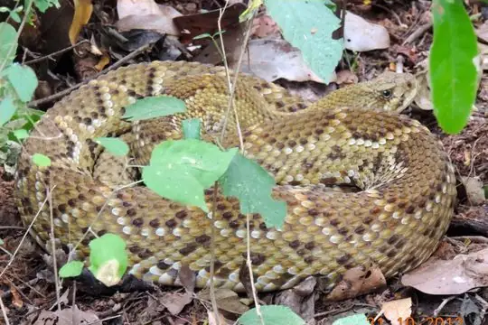
Basilisk RattlesnakeCrotalus basiliscus- No photo yetBenito Juarez's Earth SnakeGeophis juarezi
 Big Bend Blackhead SnakeTantilla cucullata
Big Bend Blackhead SnakeTantilla cucullata Big Bend Patchnose SnakeSalvadora deserticola
Big Bend Patchnose SnakeSalvadora deserticola Black Banded SnakeConiophanes melanocephalus
Black Banded SnakeConiophanes melanocephalus Black Blind Snake (magnamaculata)Epictia magnamaculata
Black Blind Snake (magnamaculata)Epictia magnamaculata Black MilksnakeLampropeltis micropholis
Black MilksnakeLampropeltis micropholis Black-banded Cat-eyed SnakeLeptodeira nigrofasciata
Black-banded Cat-eyed SnakeLeptodeira nigrofasciata Black-banded Earth SnakeGeophis nigrocinctus
Black-banded Earth SnakeGeophis nigrocinctus Black-striped Snake (imperialis)Coniophanes imperialis
Black-striped Snake (imperialis)Coniophanes imperialis Black-striped Snake (taeniata)Coniophanes taeniata
Black-striped Snake (taeniata)Coniophanes taeniata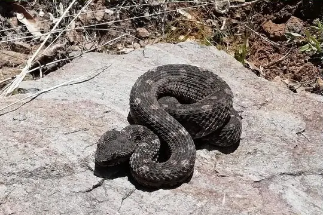
Black-tailed Horned PitviperMixcoatlus melanurus Black-tailed RattlesnakeCrotalus molossus
Black-tailed RattlesnakeCrotalus molossus Blackbelly Centipede SnakeTantilla moesta
Blackbelly Centipede SnakeTantilla moesta Blackbelly Garter SnakeThamnophis melanogaster
Blackbelly Garter SnakeThamnophis melanogaster Blackneck Garter SnakeThamnophis cyrtopsis
Blackneck Garter SnakeThamnophis cyrtopsis- No photo yetBlanchard's Earth SnakeGeophis blanchardi
 Blood SnakeStenorrhina freminvillei
Blood SnakeStenorrhina freminvillei Blotched Hooknose SnakeFicimia publia
Blotched Hooknose SnakeFicimia publia Bocourt's Black-headed SnakeTantilla bocourti
Bocourt's Black-headed SnakeTantilla bocourti Boettger's Cape Thread SnakeRena boettgeri
Boettger's Cape Thread SnakeRena boettgeri- No photo yetBogert's Coral SnakeMicrurus bogerti
- No photo yetBriggs' Centipede SnakeTantilla briggsi
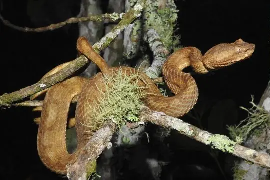
Broad-horned PitviperOphryacus sphenophrys Broad-ringed Coral SnakeMicrurus latifasciatus
Broad-ringed Coral SnakeMicrurus latifasciatus- No photo yetBrokencollar Graceful Brown SnakeRhadinella schistosa
 Brown SnakeStoreria dekayi
Brown SnakeStoreria dekayi Brown VinesnakeOxybelis aeneus
Brown VinesnakeOxybelis aeneus Brown's Coral SnakeMicrurus browni
Brown's Coral SnakeMicrurus browni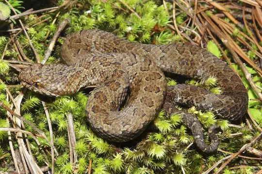
Brown's Montane PitviperMixcoatlus browni BullsnakePituophis catenifer
BullsnakePituophis catenifer Burrowing SnakeAdelphicos nigrilatum
Burrowing SnakeAdelphicos nigrilatum California KingsnakeLampropeltis californiae
California KingsnakeLampropeltis californiae California Mountain KingsnakeLampropeltis zonata
California Mountain KingsnakeLampropeltis zonata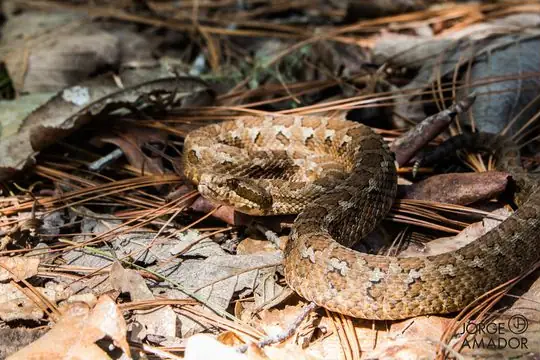
Campbell's RattlesnakeCrotalus campbelli CantilAgkistrodon russeolus
CantilAgkistrodon russeolus Cape Gopher SnakePituophis vertebralis
Cape Gopher SnakePituophis vertebralis Cape Striped WhipsnakeMasticophis aurigulus
Cape Striped WhipsnakeMasticophis aurigulus Cat-eyed Snake (septentrionalis)Leptodeira septentrionalis
Cat-eyed Snake (septentrionalis)Leptodeira septentrionalis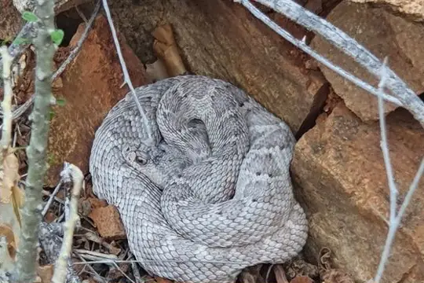
Catalina Island RattlesnakeCrotalus catalinensis Ceboruco Centipede SnakeTantilla ceboruca
Ceboruco Centipede SnakeTantilla ceboruca Cedros Gopher SnakePituophis insulanus
Cedros Gopher SnakePituophis insulanus Central American Coral SnakeMicrurus nigrocinctus
Central American Coral SnakeMicrurus nigrocinctus Central American Indigo SnakeDrymarchon melanurus
Central American Indigo SnakeDrymarchon melanurus Central American Jumping Pit ViperMetlapilcoatlus mexicanus
Central American Jumping Pit ViperMetlapilcoatlus mexicanus Central American Tree SnakeImantodes gemmistratus
Central American Tree SnakeImantodes gemmistratus Cerralvo longnose snakeRhinocheilus etheridgei
Cerralvo longnose snakeRhinocheilus etheridgei Cerro Petlalcala Montane PitviperCerrophidion petlalcalensis
Cerro Petlalcala Montane PitviperCerrophidion petlalcalensis Checkered Garter SnakeThamnophis marcianus
Checkered Garter SnakeThamnophis marcianus- No photo yetChiapan BoaUngaliophis continentalis
 Chiapan Stripeless SnakeConiophanes alvarezi
Chiapan Stripeless SnakeConiophanes alvarezi Chiapas Earth SnakeGeophis cancellatus
Chiapas Earth SnakeGeophis cancellatus Chicken SnakeSpilotes pullatus
Chicken SnakeSpilotes pullatus Chihuahuan Blackhead SnakeTantilla wilcoxi
Chihuahuan Blackhead SnakeTantilla wilcoxi Chihuahuan NightsnakeHypsiglena jani
Chihuahuan NightsnakeHypsiglena jani Cincuate Bull SnakePituophis lineaticollis
Cincuate Bull SnakePituophis lineaticollis Clarión Whip SnakeMasticophis anthonyi
Clarión Whip SnakeMasticophis anthonyi Clifton's Lizard EaterMastigodryas cliftoni
Clifton's Lizard EaterMastigodryas cliftoni- No photo yetCloud Forest Coral SnakeMicrurus nebularis
 Cloud Forest Parrot SnakeLeptophis modestus
Cloud Forest Parrot SnakeLeptophis modestus Cloudy Snail-eating SnakeSibon nebulatus
Cloudy Snail-eating SnakeSibon nebulatus CoachwhipMasticophis flagellum
CoachwhipMasticophis flagellum Coast NightsnakeHypsiglena ochrorhynchus
Coast NightsnakeHypsiglena ochrorhynchus Coffee Earth SnakeGeophis nasalis
Coffee Earth SnakeGeophis nasalis Coffee Worm SnakeAmerotyphlops tenuis
Coffee Worm SnakeAmerotyphlops tenuis Colombian BoaBoa imperator
Colombian BoaBoa imperator- No photo yetColorado Desert Shovelnose SnakeChionactis annulata
 Conant's Garter SnakeThamnophis conanti
Conant's Garter SnakeThamnophis conanti Cope's Black-striped SnakeConiophanes piceivittis
Cope's Black-striped SnakeConiophanes piceivittis Cope's Earth SnakeConopsis acuta
Cope's Earth SnakeConopsis acuta- No photo yetCope's Mountain Meadow SnakeAdelophis copei
 Coral Earth SnakeGeophis semidoliatus
Coral Earth SnakeGeophis semidoliatus Costal Lyre SnakeTrimorphodon biscutatus
Costal Lyre SnakeTrimorphodon biscutatus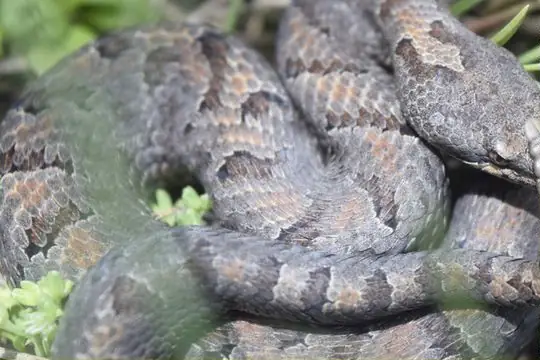
Cross-banded Mountain RattlesnakeCrotalus transversus Crowned Graceful Brown SnakeRhadinaea laureata
Crowned Graceful Brown SnakeRhadinaea laureata Degenhardt's Scorpion-eating SnakeStenorrhina degenhardtii
Degenhardt's Scorpion-eating SnakeStenorrhina degenhardtii Deppe's Centipede SnakeTantilla deppei
Deppe's Centipede SnakeTantilla deppei Desert Hooknose SnakeGyalopion quadrangulare
Desert Hooknose SnakeGyalopion quadrangulare Desert KingsnakeLampropeltis splendida
Desert KingsnakeLampropeltis splendida Desert NightsnakeHypsiglena chlorophaea
Desert NightsnakeHypsiglena chlorophaea- No photo yetDonaji's Slender Leaflitter SnakeRhadinella donaji
 Downs' Earth SnakeGeophis immaculatus
Downs' Earth SnakeGeophis immaculatus- No photo yetDuges' ThreadsnakeRena dugesii
 Dugès' Earth SnakeGeophis dugesii
Dugès' Earth SnakeGeophis dugesii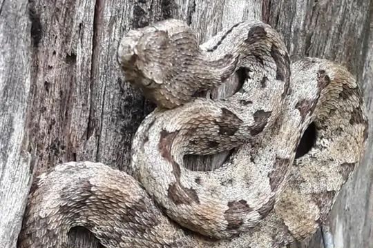
Dunn's Hognose ViperPorthidium dunni Eastern Black-tailed RattlesnakeCrotalus ornatus
Eastern Black-tailed RattlesnakeCrotalus ornatus El Molote Earth SnakeGeophis occabus
El Molote Earth SnakeGeophis occabus Elegant Coral SnakeMicrurus elegans
Elegant Coral SnakeMicrurus elegans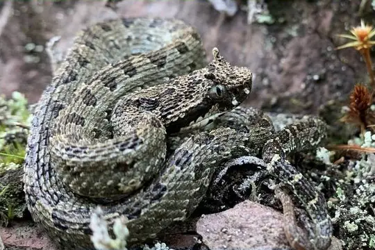
Emerald Horned PitviperOphryacus smaragdinus Espiritu Santo Striped WhipsnakeMasticophis barbouri
Espiritu Santo Striped WhipsnakeMasticophis barbouri Faded Black-striped SnakeConiophanes schmidti
Faded Black-striped SnakeConiophanes schmidti False Cat-eyed SnakePseudoleptodeira latifasciata
False Cat-eyed SnakePseudoleptodeira latifasciata False Fer-de-lanceXenodon rabdocephalus
False Fer-de-lanceXenodon rabdocephalus False FicimiaPseudoficimia frontalis
False FicimiaPseudoficimia frontalis Fer-de-lanceBothrops asper
Fer-de-lanceBothrops asper Fiddle-string SnakeImantodes cenchoa
Fiddle-string SnakeImantodes cenchoa Filetail Ground SnakeSonora aemula
Filetail Ground SnakeSonora aemula Fischer's Snail-eating SnakeTropidodipsas fischeri
Fischer's Snail-eating SnakeTropidodipsas fischeri Five-striped SnakeConiophanes quinquevittatus
Five-striped SnakeConiophanes quinquevittatus Flathead SnakeTantilla gracilis
Flathead SnakeTantilla gracilis Forbes' Graceful Brown SnakeRhadinaea forbesi
Forbes' Graceful Brown SnakeRhadinaea forbesi Forest Flame SnakeOxyrhopus petolarius
Forest Flame SnakeOxyrhopus petolarius- No photo yetFox's Mountain Meadow SnakeAdelophis foxi
 Gaige's Pine Forest SnakeRhadinaea gaigeae
Gaige's Pine Forest SnakeRhadinaea gaigeae Gaige's Thirst Snail-eaterDipsas gaigeae
Gaige's Thirst Snail-eaterDipsas gaigeae- No photo yetGarland Centipede SnakeTantilla sertula
 Giant Blind SnakeRena maxima
Giant Blind SnakeRena maxima Glossy SnakeArizona elegans
Glossy SnakeArizona elegans Godman's Garter SnakeThamnophis godmani
Godman's Garter SnakeThamnophis godmani Godman's Graceful Brown SnakeRhadinella godmani
Godman's Graceful Brown SnakeRhadinella godmani Godman's Montane Pit ViperCerrophidion godmani
Godman's Montane Pit ViperCerrophidion godmani Goldenhead Garter SnakeThamnophis chrysocephalus
Goldenhead Garter SnakeThamnophis chrysocephalus- No photo yetGraceful Mountain SnakeRhadinophanes monticola
 Gray-banded KingsnakeLampropeltis alterna
Gray-banded KingsnakeLampropeltis alterna Great Plains Rat SnakePantherophis emoryi
Great Plains Rat SnakePantherophis emoryi Green Highland RacerDrymobius chloroticus
Green Highland RacerDrymobius chloroticus Green Rat Snake (triaspis)Senticolis triaspis
Green Rat Snake (triaspis)Senticolis triaspis Green Vine Snake (fulgidus)Oxybelis fulgidus
Green Vine Snake (fulgidus)Oxybelis fulgidus Greer’s KingsnakeLampropeltis greeri
Greer’s KingsnakeLampropeltis greeri Ground Snake (semiannulata)Sonora semiannulata
Ground Snake (semiannulata)Sonora semiannulata Guatemala Neckband SnakeScaphiodontophis annulatus
Guatemala Neckband SnakeScaphiodontophis annulatus Guatemala Palm Pit ViperBothriechis bicolor
Guatemala Palm Pit ViperBothriechis bicolor- No photo yetGuerreran Centipede SnakeTantilla coronadoi
 Guerreran Earth SnakeGeophis omiltemanus
Guerreran Earth SnakeGeophis omiltemanus- No photo yetGuerreran Hooknose SnakeFicimia ruspator
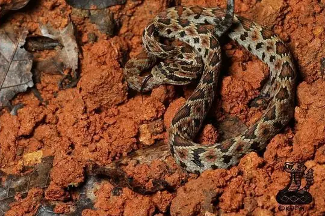
Guerreran Long-tailed RattlesnakeCrotalus ericsmithi Guerreran Pine Woods SnakeRhadinaea omiltemana
Guerreran Pine Woods SnakeRhadinaea omiltemana Guerrero Black-striped SnakeConiophanes taylori
Guerrero Black-striped SnakeConiophanes taylori- No photo yetGuerrero Slender Leaf Litter SnakeRhadinella dysmica
 Gulf Coast Vine SnakeOxybelis potosiensis
Gulf Coast Vine SnakeOxybelis potosiensis Hallberg's Cloud Forest SnakeCryophis hallbergi
Hallberg's Cloud Forest SnakeCryophis hallbergi- No photo yetHannstein's Spot-lipped SnakeRhadinella hannsteini
 Hardy's Hooknose SnakeFicimia hardyi
Hardy's Hooknose SnakeFicimia hardyi Hempstead's Pine Woods SnakeRhadinella hempsteadae
Hempstead's Pine Woods SnakeRhadinella hempsteadae Highland Earth SnakeGeophis mutitorques
Highland Earth SnakeGeophis mutitorques Highland Garter SnakeThamnophis fulvus
Highland Garter SnakeThamnophis fulvus Hognosed Pit ViperPorthidium nasutum
Hognosed Pit ViperPorthidium nasutum Honduran milk snakeLampropeltis abnorma
Honduran milk snakeLampropeltis abnorma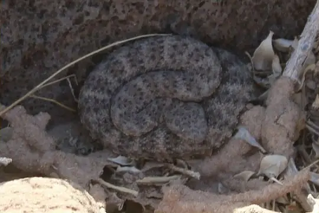
Horsehead Island speckled rattlesnakeCrotalus polisi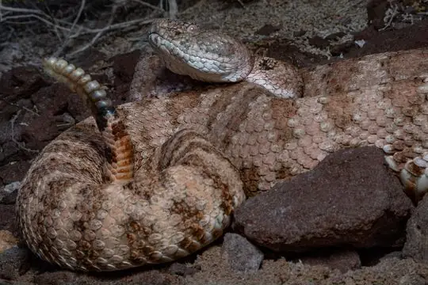
Isla Angel RattlesnakeCrotalus angelensis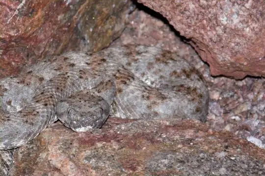
Isla Piojo Speckled RattlesnakeCrotalus thalassoporus- No photo yetIsla San Esteban WhipsnakeMasticophis slevini
 Isla Santa Catalina NightsnakeHypsiglena catalinae
Isla Santa Catalina NightsnakeHypsiglena catalinae Islas Revillagigedo NightsnakeHypsiglena unaocularus
Islas Revillagigedo NightsnakeHypsiglena unaocularus- No photo yetIsthmian Earth SnakeGeophis isthmicus
- No photo yetIverson's BlindsnakeRena iversoni
- No photo yetJohnson's Centipede SnakeTantilla johnsoni
 Kanalchutchan Graceful Brown SnakeRhadinella kanalchutchan
Kanalchutchan Graceful Brown SnakeRhadinella kanalchutchan Keeled Earth SnakeGeophis carinosus
Keeled Earth SnakeGeophis carinosus Largenose Earth SnakeConopsis nasus
Largenose Earth SnakeConopsis nasus Liebmann's Earth RunnerChersodromus liebmanni
Liebmann's Earth RunnerChersodromus liebmanni- No photo yetLined Snail SuckerSibon linearis
 Lined SnakeTropidoclonion lineatum
Lined SnakeTropidoclonion lineatum Lined Tolucan EarthsnakeConopsis lineata
Lined Tolucan EarthsnakeConopsis lineata Liner's Garter SnakeThamnophis lineri
Liner's Garter SnakeThamnophis lineri Liner's Garter Snake (bogerti)Thamnophis bogerti
Liner's Garter Snake (bogerti)Thamnophis bogerti Linton's Dwarf Short-tail SnakeTantillita lintoni
Linton's Dwarf Short-tail SnakeTantillita lintoni Longnose SnakeRhinocheilus lecontei
Longnose SnakeRhinocheilus lecontei Longtail Alpine Garter SnakeThamnophis scalaris
Longtail Alpine Garter SnakeThamnophis scalaris Loranca's Earth SnakeGeophis lorancai
Loranca's Earth SnakeGeophis lorancai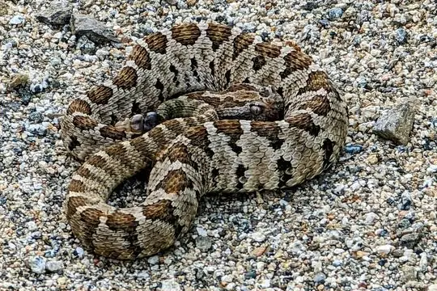
Lower California RattlesnakeCrotalus enyo MacDougall's Graceful Brown SnakeRhadinaea macdougalli
MacDougall's Graceful Brown SnakeRhadinaea macdougalli Madrean Mountain KingsnakeLampropeltis knoblochi
Madrean Mountain KingsnakeLampropeltis knoblochi Madrean Narrowheaded Garter SnakeThamnophis unilabialis
Madrean Narrowheaded Garter SnakeThamnophis unilabialis Marcella's Graceful Brown SnakeRhadinaea marcellae
Marcella's Graceful Brown SnakeRhadinaea marcellae MassasaugaSistrurus catenatus
MassasaugaSistrurus catenatus Mesa Central Earth SnakeGeophis laticinctus
Mesa Central Earth SnakeGeophis laticinctus Mesa del Sur Earth Snake (dubius)Geophis dubius
Mesa del Sur Earth Snake (dubius)Geophis dubius- No photo yetMesa del Sur Earth Snake (rostralis)Geophis rostralis
 Mexican Black-headed SnakeTantilla atriceps
Mexican Black-headed SnakeTantilla atriceps Mexican Brown SnakeStoreria storerioides
Mexican Brown SnakeStoreria storerioides Mexican Bull SnakePituophis deppei
Mexican Bull SnakePituophis deppei Mexican burrowing pythonLoxocemus bicolor
Mexican burrowing pythonLoxocemus bicolor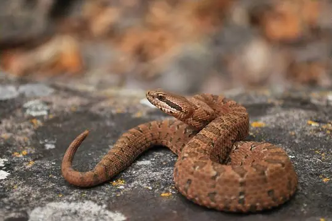
Mexican Dusky RattlesnakeCrotalus armstrongi Mexican Garter SnakeThamnophis eques
Mexican Garter SnakeThamnophis eques Mexican Hog-nose SnakeHeterodon kennerlyi
Mexican Hog-nose SnakeHeterodon kennerlyi Mexican Hook-nosed SnakeFicimia olivacea
Mexican Hook-nosed SnakeFicimia olivacea Mexican KingsnakeLampropeltis mexicana
Mexican KingsnakeLampropeltis mexicana Mexican Kingsnake (leonis)Lampropeltis leonis
Mexican Kingsnake (leonis)Lampropeltis leonis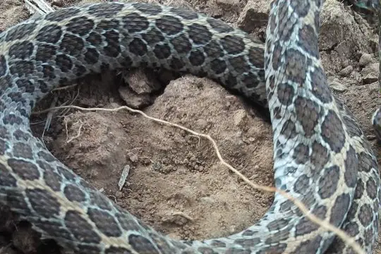
Mexican Lancehead RattlesnakeCrotalus polystictus Mexican Long-nosed SnakeRhinocheilus antonii
Mexican Long-nosed SnakeRhinocheilus antonii Mexican Longtail SnakeEnulius oligostichus
Mexican Longtail SnakeEnulius oligostichus Mexican Lyre SnakeTrimorphodon tau
Mexican Lyre SnakeTrimorphodon tau Mexican MilksnakeLampropeltis annulata
Mexican MilksnakeLampropeltis annulata Mexican MoccasinAgkistrodon bilineatus
Mexican MoccasinAgkistrodon bilineatus Mexican Parrot SnakeLeptophis mexicanus
Mexican Parrot SnakeLeptophis mexicanus Mexican Patchnose SnakeSalvadora mexicana
Mexican Patchnose SnakeSalvadora mexicana Mexican Plateau Earth SnakeGeophis bicolor
Mexican Plateau Earth SnakeGeophis bicolor Mexican Pygmy RattlesnakeCrotalus ravus
Mexican Pygmy RattlesnakeCrotalus ravus Mexican Short-tail SnakeSympholis lippiens
Mexican Short-tail SnakeSympholis lippiens Mexican Smallhead RattlesnakeCrotalus intermedius
Mexican Smallhead RattlesnakeCrotalus intermedius Mexican Snake EaterClelia scytalina
Mexican Snake EaterClelia scytalina Mexican Wandering Garter SnakeThamnophis errans
Mexican Wandering Garter SnakeThamnophis errans Mexican White-lipped SnakeSymphimus leucostomus
Mexican White-lipped SnakeSymphimus leucostomus Mexican Yellowbelly Brown SnakeStoreria hidalgoensis
Mexican Yellowbelly Brown SnakeStoreria hidalgoensis Michoacan Black-striped SnakeConiophanes michoacanensis
Michoacan Black-striped SnakeConiophanes michoacanensis Michoacán Centipede SnakeTantilla cascadae
Michoacán Centipede SnakeTantilla cascadae- No photo yetMichoacán Earth SnakeGeophis maculiferus
 Michoacán Ground SnakeSonora michoacanensis
Michoacán Ground SnakeSonora michoacanensis Michoacán Ground Snake (mutabilis)Sonora mutabilis
Michoacán Ground Snake (mutabilis)Sonora mutabilis- No photo yetMichoacán Slender Blind SnakeRena bressoni
 Middle American Burrowing Snake (quadrivirgatum)Adelphicos quadrivirgatum
Middle American Burrowing Snake (quadrivirgatum)Adelphicos quadrivirgatum Middle American Burrowing Snake (visoninum)Adelphicos visoninum
Middle American Burrowing Snake (visoninum)Adelphicos visoninum Middle American RattlesnakeCrotalus simus
Middle American RattlesnakeCrotalus simus miter snakeSonora episcopa
miter snakeSonora episcopa Mojave RattlesnakeCrotalus scutulatus
Mojave RattlesnakeCrotalus scutulatus Montane Garter SnakeThamnophis exsul
Montane Garter SnakeThamnophis exsul Mora's Road GuarderConophis morai
Mora's Road GuarderConophis morai Mosauer’s Ground SnakeSonora mosaueri
Mosauer’s Ground SnakeSonora mosaueri Mountain Patchnose SnakeSalvadora grahamiae
Mountain Patchnose SnakeSalvadora grahamiae Mussurana (clelia)Clelia clelia
Mussurana (clelia)Clelia clelia Myers' Graceful Brown SnakeRhadinaea myersi
Myers' Graceful Brown SnakeRhadinaea myersi Narrowhead WatersnakeThamnophis rufipunctatus
Narrowhead WatersnakeThamnophis rufipunctatus Nayarit Coral SnakeMicrurus proximans
Nayarit Coral SnakeMicrurus proximans Neotropical Whip SnakeMasticophis mentovarius
Neotropical Whip SnakeMasticophis mentovarius- No photo yetNew Mexico ThreadsnakeRena dissecta
 Newman's earth snakeAdelphicos newmanorum
Newman's earth snakeAdelphicos newmanorum Night SnakeHypsiglena torquata
Night SnakeHypsiglena torquata Northern Three-lined BoaLichanura orcutti
Northern Three-lined BoaLichanura orcutti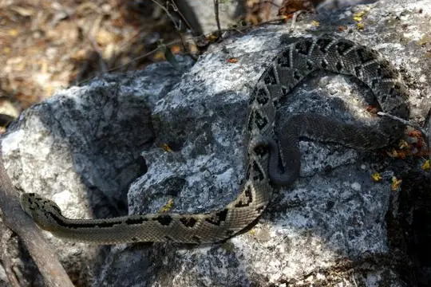
Northwestern Neotropical RattlesnakeCrotalus culminatus Nuevo Leon Graceful Brown SnakeRhadinaea montana
Nuevo Leon Graceful Brown SnakeRhadinaea montana- No photo yetOaxacan Burrowing SnakeAdelphicos latifasciatum
 Oaxacan Cat-eyed SnakeTantalophis discolor
Oaxacan Cat-eyed SnakeTantalophis discolor Oaxacan Centipede SnakeTantilla oaxacae
Oaxacan Centipede SnakeTantilla oaxacae Oaxacan Coral SnakeMicrurus ephippifer
Oaxacan Coral SnakeMicrurus ephippifer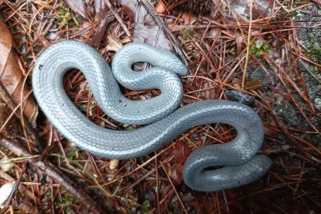
Oaxacan Dwarf BoaExiliboa placata Oaxacan Graceful Brown SnakeRhadinaea bogertorum
Oaxacan Graceful Brown SnakeRhadinaea bogertorum Oaxacan Patchnose SnakeSalvadora intermedia
Oaxacan Patchnose SnakeSalvadora intermedia Olmecan Pit ViperMetlapilcoatlus olmec
Olmecan Pit ViperMetlapilcoatlus olmec Orangebelly Swamp SnakeTretanorhinus nigroluteus
Orangebelly Swamp SnakeTretanorhinus nigroluteus Pacific Coast Centipede SnakeTantilla calamarina
Pacific Coast Centipede SnakeTantilla calamarina Pacific Coast Parrot SnakeLeptophis diplotropis
Pacific Coast Parrot SnakeLeptophis diplotropis Pacific Longtail SnakeEnulius flavitorques
Pacific Longtail SnakeEnulius flavitorques Pacific Patchnose SnakeSalvadora lemniscata
Pacific Patchnose SnakeSalvadora lemniscata Peninsula Glossy SnakeArizona pacata
Peninsula Glossy SnakeArizona pacata Peninsula Stripeless SnakeConiophanes meridanus
Peninsula Stripeless SnakeConiophanes meridanus Peten Centipede Snake (cuniculator)Tantilla cuniculator
Peten Centipede Snake (cuniculator)Tantilla cuniculator Peters' Earth SnakeGeophis petersii
Peters' Earth SnakeGeophis petersii Philippi's Snail-eating SnakeTropidodipsas philippii
Philippi's Snail-eating SnakeTropidodipsas philippii- No photo yetPigmy Snail SuckerSibon sanniolus
 Pine SnakePituophis melanoleucus
Pine SnakePituophis melanoleucus Pine-Oak SnakeRhadinaea taeniata
Pine-Oak SnakeRhadinaea taeniata Plainbelly Water SnakeNerodia erythrogaster
Plainbelly Water SnakeNerodia erythrogaster Plains Blackhead SnakeTantilla nigriceps
Plains Blackhead SnakeTantilla nigriceps Poppyfield SnailsuckerTropidodipsas papavericola
Poppyfield SnailsuckerTropidodipsas papavericola- No photo yetPosada's Graceful Brown SnakeRhadinella posadasi
- No photo yetPotosí Centipede SnakeTantilla shawi
 Potosí Earth SnakeGeophis latifrontalis
Potosí Earth SnakeGeophis latifrontalis Prairie RattlesnakeCrotalus viridis
Prairie RattlesnakeCrotalus viridis Puebla Earth SnakeGeophis turbidus
Puebla Earth SnakeGeophis turbidus- No photo yetPueblan Centipede SnakeTantilla robusta
 Pueblan Graceful Brown SnakeRhadinaea quinquelineata
Pueblan Graceful Brown SnakeRhadinaea quinquelineata Puffing SnakePhrynonax poecilonotus
Puffing SnakePhrynonax poecilonotus Pyburn's Earth SnakeGeophis pyburni
Pyburn's Earth SnakeGeophis pyburni Queretaran Dusky RattlesnakeCrotalus aquilus
Queretaran Dusky RattlesnakeCrotalus aquilus RacerColuber constrictor
RacerColuber constrictor Rainforest Cat-eyed SnakeLeptodeira frenata
Rainforest Cat-eyed SnakeLeptodeira frenata- No photo yetRamirez's Hooknose SnakeFicimia ramirezi
 Red Black-headed SnakeTantilla rubra
Red Black-headed SnakeTantilla rubra Red Diamond RattlesnakeCrotalus ruber
Red Diamond RattlesnakeCrotalus ruber Red Earth Centipede SnakeTantilla schistosa
Red Earth Centipede SnakeTantilla schistosa- No photo yetRed Earth SnakeGeophis russatus
 Redback Coffee SnakeNinia sebae
Redback Coffee SnakeNinia sebae- No photo yetRedbelly Earth RunnerChersodromus rubriventris
 Resplendent Shovel-nosed SnakeSonora annulata
Resplendent Shovel-nosed SnakeSonora annulata Ribbon Graceful Brown SnakeRhadinaea fulvivittis
Ribbon Graceful Brown SnakeRhadinaea fulvivittis Ridge-nosed RattlesnakeCrotalus willardi
Ridge-nosed RattlesnakeCrotalus willardi Ridgehead SnakeManolepis putnami
Ridgehead SnakeManolepis putnami Ringneck Coffee SnakeNinia diademata
Ringneck Coffee SnakeNinia diademata Ringneck SnakeDiadophis punctatus
Ringneck SnakeDiadophis punctatus Rio Grande de Santiago NightsnakeHypsiglena affinis
Rio Grande de Santiago NightsnakeHypsiglena affinis Rio Verde NightsnakeHypsiglena tanzeri
Rio Verde NightsnakeHypsiglena tanzeri Road GuarderConophis lineatus
Road GuarderConophis lineatus Rock RattlesnakeCrotalus lepidus
Rock RattlesnakeCrotalus lepidus Rosebelly Earth SnakeGeophis rhodogaster
Rosebelly Earth SnakeGeophis rhodogaster Rossman's Garter SnakeThamnophis rossmani
Rossman's Garter SnakeThamnophis rossmani Rosy BoaLichanura trivirgata
Rosy BoaLichanura trivirgata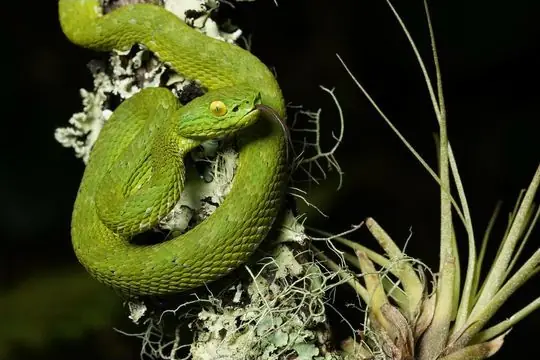
Rowley's Palm Pit ViperBothriechis rowleyi Rusty-headed SnakeAmastridium sapperi
Rusty-headed SnakeAmastridium sapperi Rustyhead SnakeAmastridium veliferum
Rustyhead SnakeAmastridium veliferum Ruthvens KingsnakeLampropeltis ruthveni
Ruthvens KingsnakeLampropeltis ruthveni- No photo yetSaddled Coral SnakeMicrurus bernadi
 Sallae's Earth SnakeGeophis sallaei
Sallae's Earth SnakeGeophis sallaei Salmon-bellied racerMastigodryas melanolomus
Salmon-bellied racerMastigodryas melanolomus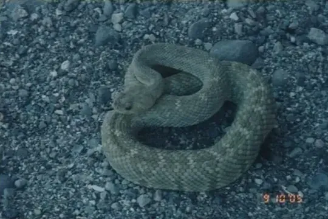
San Esteban Island RattlesnakeCrotalus estebanensis San Felipe Ground SnakeConopsis megalodon
San Felipe Ground SnakeConopsis megalodon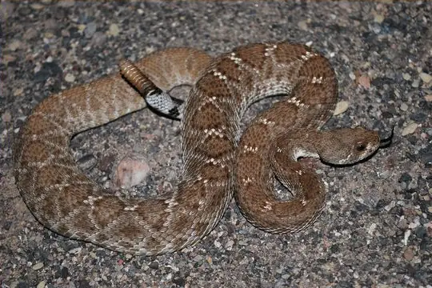
San Lorenzo Island RattlesnakeCrotalus lorenzoensis Sand Snake (straminea)Sonora straminea
Sand Snake (straminea)Sonora straminea- No photo yetSanta Catalina KingsnakeLampropeltis catalinensis
 Sargi's Earth SnakeAdelphicos sargii
Sargi's Earth SnakeAdelphicos sargii Savage's Sand SnakeSonora savagei
Savage's Sand SnakeSonora savagei Schott's WhipsnakeMasticophis schotti
Schott's WhipsnakeMasticophis schotti Short-tail Alpine Garter SnakeThamnophis scaliger
Short-tail Alpine Garter SnakeThamnophis scaliger SidewinderCrotalus cerastes
SidewinderCrotalus cerastes Siebold's Earth SnakeGeophis sieboldi
Siebold's Earth SnakeGeophis sieboldi Sierra Coalcoman Earth SnakeGeophis incomptus
Sierra Coalcoman Earth SnakeGeophis incomptus Sierra Juarez Earth SnakeGeophis duellmani
Sierra Juarez Earth SnakeGeophis duellmani Sierra Mije Earth SnakeGeophis anocularis
Sierra Mije Earth SnakeGeophis anocularis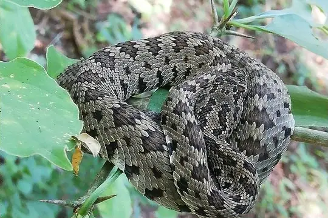
Sinaloan Long-tailed RattlesnakeCrotalus stejnegeri Sinaloan lyresnakeTrimorphodon paucimaculatus
Sinaloan lyresnakeTrimorphodon paucimaculatus- No photo yetSlavens' Centipede SnakeTantilla slavensi
 Slender Hognose ViperPorthidium ophryomegas
Slender Hognose ViperPorthidium ophryomegas Slender Snail SuckerSibon dimidiatus
Slender Snail SuckerSibon dimidiatus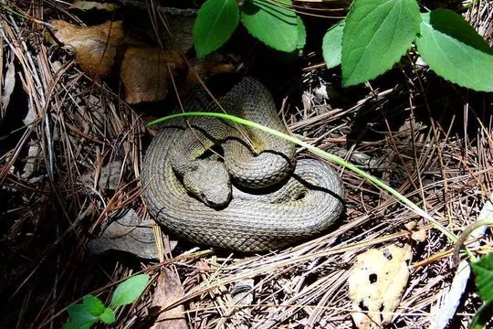
Slender-horned PitviperOphryacus undulatus Slinder ThreadsnakeEpictia phenops
Slinder ThreadsnakeEpictia phenops Smith's Black-headed SnakeTantilla hobartsmithi
Smith's Black-headed SnakeTantilla hobartsmithi Snail-eating Thirst SnakeDipsas brevifacies
Snail-eating Thirst SnakeDipsas brevifacies Sonoran CoralsnakeMicruroides euryxanthus
Sonoran CoralsnakeMicruroides euryxanthus Sonoran Lyre SnakeTrimorphodon lambda
Sonoran Lyre SnakeTrimorphodon lambda Sonoran Mountain KingsnakeLampropeltis pyromelana
Sonoran Mountain KingsnakeLampropeltis pyromelana Sonoran Shovelnose SnakeSonora palarostris
Sonoran Shovelnose SnakeSonora palarostris Sonoran WhipsnakeMasticophis bilineatus
Sonoran WhipsnakeMasticophis bilineatus Southern Durango Spotted Garter SnakeThamnophis nigronuchalis
Southern Durango Spotted Garter SnakeThamnophis nigronuchalis Southern Pacific RattlesnakeCrotalus helleri
Southern Pacific RattlesnakeCrotalus helleri Southwestern Cat-eyed SnakeLeptodeira maculata
Southwestern Cat-eyed SnakeLeptodeira maculata Southwestern Speckled RattlesnakeCrotalus pyrrhus
Southwestern Speckled RattlesnakeCrotalus pyrrhus Speckled Dwarf Short-tail SnakeTantillita brevissima
Speckled Dwarf Short-tail SnakeTantillita brevissima Speckled RacerDrymobius margaritiferus
Speckled RacerDrymobius margaritiferus Speckled RattlesnakeCrotalus mitchellii
Speckled RattlesnakeCrotalus mitchellii Splendid Cat-eyed SnakeLeptodeira splendida
Splendid Cat-eyed SnakeLeptodeira splendida Striped Centipede SnakeTantilla striata
Striped Centipede SnakeTantilla striata Striped Lizard EaterMastigodryas dorsalis
Striped Lizard EaterMastigodryas dorsalis Striped Lowland SnakeLeptodrymus pulcherrimus
Striped Lowland SnakeLeptodrymus pulcherrimus Striped RacerMasticophis lateralis
Striped RacerMasticophis lateralis Striped Road GuarderConophis vittatus
Striped Road GuarderConophis vittatus Striped WhipsnakeMasticophis taeniatus
Striped WhipsnakeMasticophis taeniatus Stripeless SnakeConiophanes lateritius
Stripeless SnakeConiophanes lateritius Sumichrast's Garter SnakeThamnophis sumichrasti
Sumichrast's Garter SnakeThamnophis sumichrasti Tamaulipan Montane Garter SnakeThamnophis mendax
Tamaulipan Montane Garter SnakeThamnophis mendax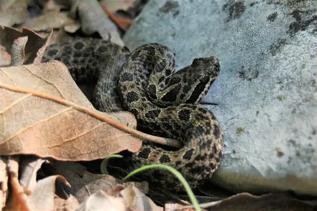
Tamaulipan Rock RattlesnakeCrotalus morulus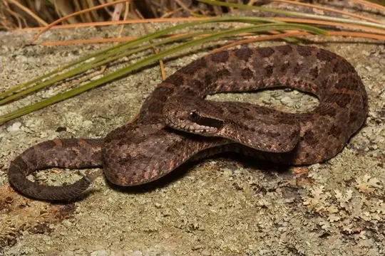
Tancitaran Dusky RattlesnakeCrotalus pusillus- No photo yetTancitaro RattlesnakeCrotalus tancitarensis
 Tarascan Earth SnakeGeophis tarascae
Tarascan Earth SnakeGeophis tarascae Taylor's CantilAgkistrodon taylori
Taylor's CantilAgkistrodon taylori Taylor’s Ground SnakeSonora taylori
Taylor’s Ground SnakeSonora taylori Tearful Pine-Oak SnakeRhadinella lachrymans
Tearful Pine-Oak SnakeRhadinella lachrymans Tehuantepec Hooknose SnakeFicimia variegata
Tehuantepec Hooknose SnakeFicimia variegata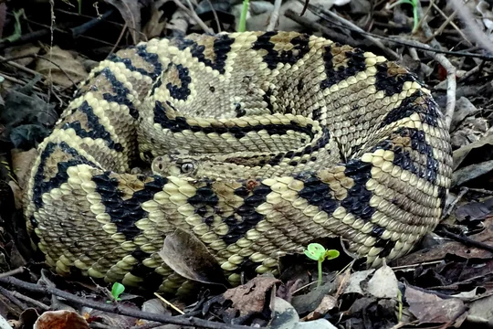
Tehuantepec Isthmus Neotropical rattlesnakeCrotalus ehecatl Tehuantepec Striped SnakeGeagras redimitus
Tehuantepec Striped SnakeGeagras redimitus- No photo yetTepalcatepec Valley GartersnakeThamnophis postremus
- No photo yetTerrestrial Snail SuckerTropidodipsas sartorii
 Texas Blind SnakeRena dulcis
Texas Blind SnakeRena dulcis Texas Coral SnakeMicrurus tener
Texas Coral SnakeMicrurus tener Texas Lyre SnakeTrimorphodon vilkinsonii
Texas Lyre SnakeTrimorphodon vilkinsonii Texas Patchnose SnakeSalvadora lineata
Texas Patchnose SnakeSalvadora lineata- No photo yetThree-lined Centipede Snake (triseriata)Tantilla triseriata
 Tiger RattlesnakeCrotalus tigris
Tiger RattlesnakeCrotalus tigris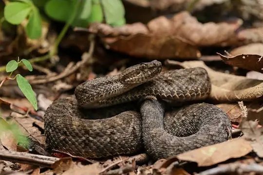
Tlaloc's RattlesnakeCrotalus tlaloci- No photo yetTortuga Island RattlesnakeCrotalus tortugensis
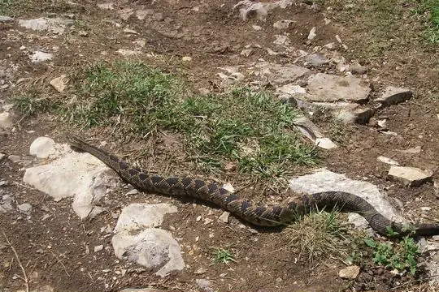
Totonacan RattlesnakeCrotalus totonacus Trans-pecos RatsnakeBogertophis subocularis
Trans-pecos RatsnakeBogertophis subocularis Trans-Pecos ThreadsnakeRena segrega
Trans-Pecos ThreadsnakeRena segrega Tricolor SnailsuckerTropidodipsas tricolor
Tricolor SnailsuckerTropidodipsas tricolor Tuxtlan Coral SnakeMicrurus limbatus
Tuxtlan Coral SnakeMicrurus limbatus Twin-spotted RattlesnakeCrotalus pricei
Twin-spotted RattlesnakeCrotalus pricei- No photo yetTwin-spotted Tolucan Ground SnakeConopsis amphisticha
 Two-lined Mexican Earth SnakeConopsis biserialis
Two-lined Mexican Earth SnakeConopsis biserialis Two-spotted SnakeConiophanes bipunctatus
Two-spotted SnakeConiophanes bipunctatus Two-striped Garter SnakeThamnophis hammondii
Two-striped Garter SnakeThamnophis hammondii Tzotzil Montane Pit ViperCerrophidion tzotzilorum
Tzotzil Montane Pit ViperCerrophidion tzotzilorum Uribe's False Cat-eyed SnakeLeptodeira uribei
Uribe's False Cat-eyed SnakeLeptodeira uribei Variable Coral SnakeMicrurus diastema
Variable Coral SnakeMicrurus diastema Variegated False Coral SnakePliocercus elapoides
Variegated False Coral SnakePliocercus elapoides- No photo yetVeracruz Earth SnakeGeophis chalybeus
 Veracruz Graceful Brown SnakeRhadinaea cuneata
Veracruz Graceful Brown SnakeRhadinaea cuneata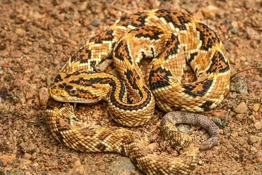
Veracruz Neotropical rattlesnakeCrotalus mictlantecuhtli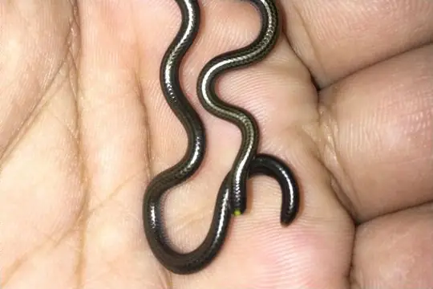
Vindum's Worm SnakeEpictia vindumi- No photo yetVolcan Tacana Centipede SnakeTantilla tayrae
 Webb's KingsnakeLampropeltis webbi
Webb's KingsnakeLampropeltis webbi- No photo yetWerner's Thirst SnakeDipsas maxillaris
 West Coast Garter SnakeThamnophis validus
West Coast Garter SnakeThamnophis validus West Mexican Coral SnakeMicrurus distans
West Mexican Coral SnakeMicrurus distans Western Aquatic Garter SnakeThamnophis couchii
Western Aquatic Garter SnakeThamnophis couchii Western Blackhead SnakeTantilla planiceps
Western Blackhead SnakeTantilla planiceps Western Cat-eyed SnakeLeptodeira punctata
Western Cat-eyed SnakeLeptodeira punctata Western Diamond-backed RattlesnakeCrotalus atrox
Western Diamond-backed RattlesnakeCrotalus atrox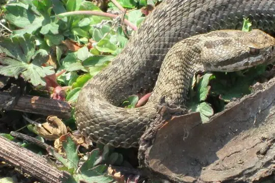
Western Dusky RattlesnakeCrotalus triseriatus Western Graceful Brown SnakeRhadinaea hesperia
Western Graceful Brown SnakeRhadinaea hesperia Western Hognose SnakeHeterodon nasicus
Western Hognose SnakeHeterodon nasicus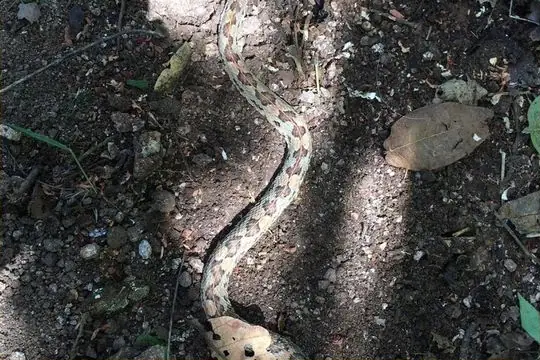
Western Hognose ViperPorthidium hespere Western Hooknose SnakeGyalopion canum
Western Hooknose SnakeGyalopion canum Western Jumping PitviperMetlapilcoatlus occiduus
Western Jumping PitviperMetlapilcoatlus occiduus Western MassasaugaSistrurus tergeminus
Western MassasaugaSistrurus tergeminus Western Patchnose SnakeSalvadora hexalepis
Western Patchnose SnakeSalvadora hexalepis Western RattlesnakeCrotalus oreganus
Western RattlesnakeCrotalus oreganus Western RibbonsnakeThamnophis proximus
Western RibbonsnakeThamnophis proximus Western Shovelnose SnakeSonora occipitalis
Western Shovelnose SnakeSonora occipitalis- No photo yetWestern Snail-eating SnakeTropidodipsas annulifera
 Western Terrestrial Garter SnakeThamnophis elegans
Western Terrestrial Garter SnakeThamnophis elegans Western ThreadsnakeRena humilis
Western ThreadsnakeRena humilis Widecollar Earth SnakeGeophis laticollaris
Widecollar Earth SnakeGeophis laticollaris Yaqui Black-headed SnakeTantilla yaquia
Yaqui Black-headed SnakeTantilla yaquia Yellow-blotched Palm Pit ViperBothriechis aurifer
Yellow-blotched Palm Pit ViperBothriechis aurifer Yellow-lined Centipede SnakeTantilla flavilineata
Yellow-lined Centipede SnakeTantilla flavilineata Yellow-red Rat SnakePseudelaphe flavirufa
Yellow-red Rat SnakePseudelaphe flavirufa Yellow-throated gartersnakeThamnophis pulchrilatus
Yellow-throated gartersnakeThamnophis pulchrilatus Yellowbelly SnakeConiophanes fissidens
Yellowbelly SnakeConiophanes fissidens Yucatan Neotropical RattlesnakeCrotalus tzabcan
Yucatan Neotropical RattlesnakeCrotalus tzabcan Yucatan Rat SnakePseudelaphe phaescens
Yucatan Rat SnakePseudelaphe phaescens Yucatecan Dwarf Short-tail SnakeTantillita canula
Yucatecan Dwarf Short-tail SnakeTantillita canula Yucatecan Worm SnakeAmerotyphlops microstomus
Yucatecan Worm SnakeAmerotyphlops microstomus Yucatán Blunthead SnakeImantodes tenuissimus
Yucatán Blunthead SnakeImantodes tenuissimus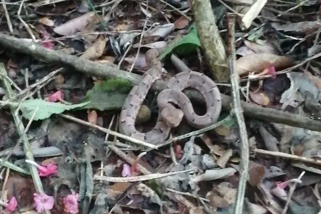
Yucatán Hognose ViperPorthidium yucatanicum Yucatán White-lipped SnakeSymphimus mayae
Yucatán White-lipped SnakeSymphimus mayae- No photo yetZertuche's Earth SnakeGeophis juliai
 Zweifel's Snail-eating SnakeTropidodipsas zweifeli
Zweifel's Snail-eating SnakeTropidodipsas zweifeli- No photo yetCenaspis aenigma
 Chersodromus australis
Chersodromus australis- No photo yetChersodromus nigrum
- No photo yetColuber slevini
- No photo yetCrotalus caliginis
- No photo yetCrotalus lugubris
- No photo yetCrotalus muertensis
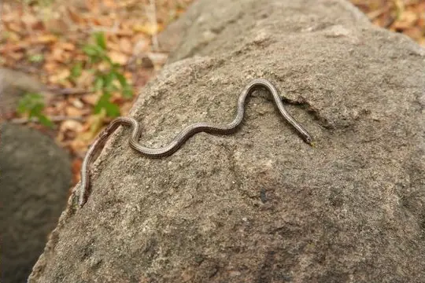
Epictia resetari- No photo yetEpictia schneideri
- No photo yetEpictia wynni
- No photo yetEridiphas marcosensis
- No photo yetLeptodeira polysticta
 Metlapilcoatlus borealis
Metlapilcoatlus borealis Micrurus pachecogili
Micrurus pachecogili- No photo yetRena myopica
 Rhadinaea nuchalis
Rhadinaea nuchalis Salvadora gymnorhachis
Salvadora gymnorhachis Tropidodipsas repleta
Tropidodipsas repleta
No snakes in Mexico match.
Mexico’s snakes in numbers
- Families: Colubridae 323, Viperidae 76, Leptotyphlopidae 17, Elapidae 16, Boidae 5, Typhlopidae 2, Dipsadidae 1, Loxocemidae 1.
- 245 are recorded in no other country in SnakeList: Autlán Long-tailed Rattlesnake, Baird's Patchnose Snake, Baja California Night Snake, Bakewell's Blind Snake, Balsas Coral Snake, Banded Sand Snake (fasciata), Barbour's Montane Pit Viper, Basilisk Rattlesnake, Benito Juarez's Earth Snake, Black Banded Snake, Black-banded Earth Snake, Black-striped Snake (taeniata) and 233 more.